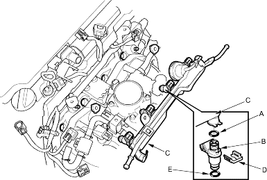

PGM-FI System
Injector Replacement (cont'd)
11-114
Coat the new O-rings (A) with clean engine oil, and insert the injectors (B) into the fuel rail (C).

Install the injector clip (D).
Coat the injector O-ring (E) with clean engine oil.
To prevent damage to the O-rings, install the injectors in the fuel rail first, then install them in the injector base.
Install the fuel rail mounting nuts.
Connect the connectors on the injectors, the MAP sensor, the EVAP canister purge valve, and the TP sensor.
Connect the quick-connect fittings.
Install the air cleaner (see page
11-146
).
Turn the ignition switch ON (II), but do not operate the starter. After the fuel pump runs for approximately 2 seconds, the fuel pressure in the fuel line rises. Repeat this 2 or 3 times, then check for fuel leakage.